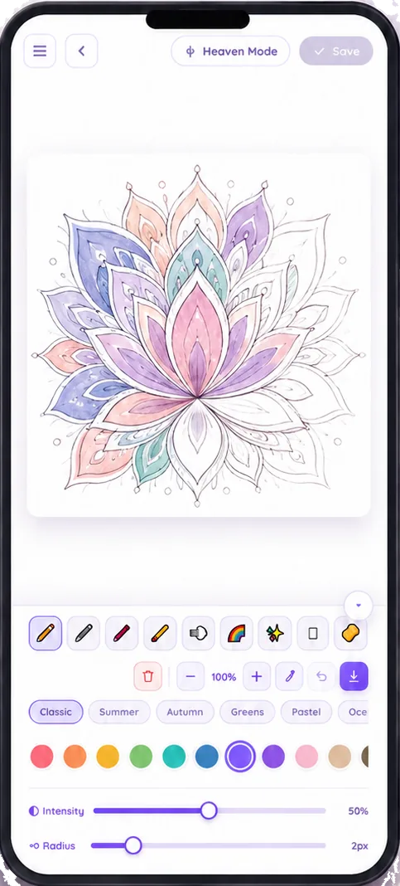
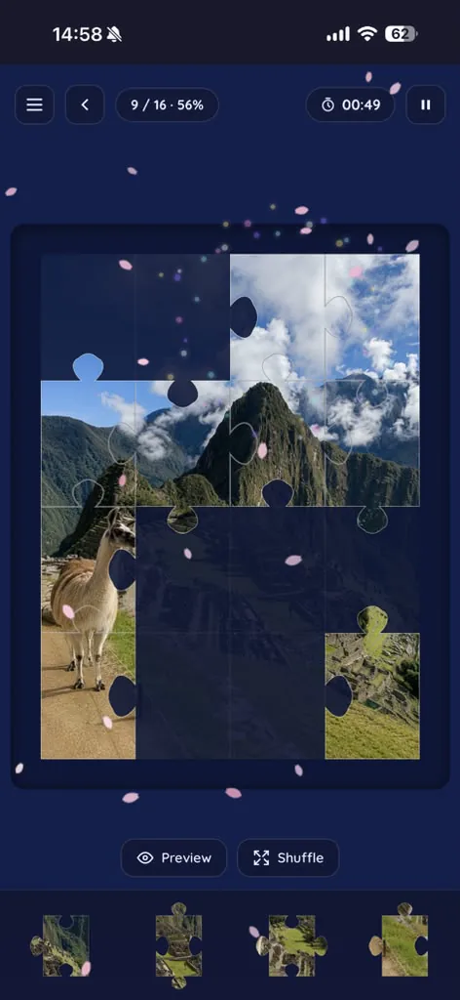
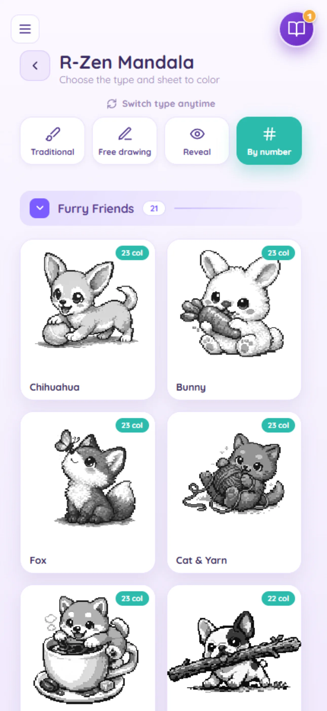

Less loading. More unwinding.
Puzzle galleries load pictures as they come into view, using less memory and helping prevent unexpected reloads on iPhone and iPad.
Between the Christmas lights and new beginnings, make a little room for yourself. Color, piece together a puzzle, and find your own kind of calm.
Free to download · Made for iPhone & iPad
R-Zen 3.0 brought Nights of Light and Memory. Version 3.0.1 makes exploring your puzzle galleries lighter and more stable.
Meet the collections ↓Puzzle galleries load pictures as they come into view, using less memory and helping prevent unexpected reloads on iPhone and iPad.
Explore Noir Nights and artwork inspired by Día de Muertos: mandalas, cozy illustrations, Magic Color, paint-by-number and animated creations.
Finish a Magic Color canvas and keep it as a collectible card in your journal. A little reminder of the time you made for yourself.
Browse the updated seasonal carousels, with layouts refined for iPhone and iPad. Autumn or spring follows your hemisphere preference.
The collections introduced in R-Zen 3.0 stay with you beyond the season.

Cozy city corners, moonlit streets and a little mystery. Explore 68 artworks across coloring, Magic Color, paint-by-number and Comes Alive.

An affectionate celebration of memory through marigolds, traditional details and welcoming scenes. Discover 36 designs across four creative categories.
Optional pack downloads · Included with the one-time Premium unlock · Create offline after downloading
A brush, a puzzle piece, a quiet moment. There is more than one way to feel at home.

Let color find its rhythm. Fill intricate patterns at your own pace.

Travel through beautiful places, one piece at a time. No timer. No rush.
Cozy scenes and little details, ready for your own palette.

Follow the numbers and watch a picture come together.
Brush across the canvas to reveal a full-color world underneath.

Finish selected paint-by-number artworks and see them begin to move.
Write in your journal, revisit your completed creations and collect cards from your Magic Color canvases. Add original ambient music, and let the day soften around you.
Explore a few views of R-Zen on iPhone and iPad. Tap an image for a closer look.


A quiet Christmas morning. A pause between celebrations. The first page of a new year. There is no perfect time to begin—just a moment that is yours.
One color, one puzzle, one journal entry. Start wherever you feel like it.
Choose your music and take your time. There is nothing to keep up with.
Save your creation, return to it tomorrow, or begin something new.
Start with a free selection across the main creative modes. Unlock more with an optional one-time Premium purchase. No subscriptions.
Download on the App StoreiPhone & iPad · 8 app languages · No ads or accounts

A previous chapter, still part of R-Zen’s seasonal world. Enchanted Night is optional and never switches on automatically.
R-Zen is free to download and includes a selection of content in the main modes. Premium is an optional one-time purchase, with no subscription. Prices are shown in the App Store and inside the app.
The included creative content works offline. Optional packs need an internet connection to download; once saved on your device, you can use them offline too. Purchases and external links also need a connection.
This update improves stability and memory use in puzzle galleries. The new collections and collectible journal cards were introduced in version 3.0.
This page has a special Christmas and New Year design. The collections featured here are Noir Nights and Day of the Dead, introduced in R-Zen 3.0. The holiday illustration is website artwork.
Spanish, English, Portuguese, French, Italian, Japanese, German and Vietnamese. This website is available in English and Spanish.